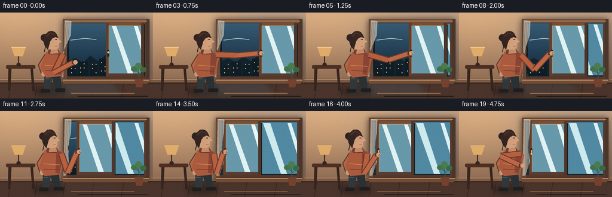
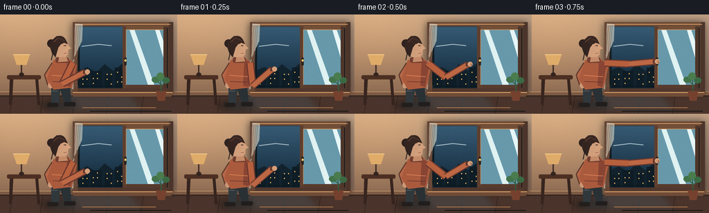
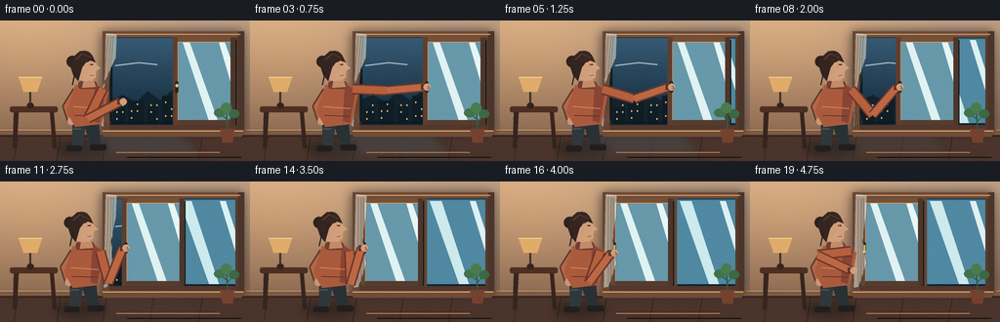

CODING AGENTS AS PIXEL WORLD MODELS
traex/GPT-5.6-Sol · motion_rationality_0043
点击播放 · 原生 RGB 像素
逐轮保存的候选
回放视频、检查图与代码变化。
每份候选均可单独播放。实际图片检查记录在下方工具轨迹中。
候选 01播放与检查图
点击播放 · 原生 RGB 像素


展开代码变化
--- 上一保存版本
+++ 本次保存版本
@@ -0,0 +1,326 @@
+from pathlib import Path
+import math
+import numpy as np
+from PIL import Image, ImageDraw, ImageFilter
+import artifact_io
+
+W, H, N = 256, 144, 20
+S = 4
+rng = np.random.default_rng(43)
+static_grain = rng.normal(0, 1.0, (H, W, 1))
+
+
+def q(v):
+ return int(round(v * S))
+
+def box(b):
+ return tuple(q(v) for v in b)
+
+def pts(seq):
+ return [(q(x), q(y)) for x, y in seq]
+
+def smooth(x):
+ x = max(0.0, min(1.0, x))
+ return x*x*(3-2*x)
+
+def lerp(a,b,t):
+ return a+(b-a)*t
+
+def ellipse(d, b, fill, outline=None, width=1):
+ d.ellipse(box(b), fill=fill, outline=outline, width=q(width) if outline else 1)
+
+def line(d, xy, fill, width=1, joint='curve'):
+ d.line(pts(xy), fill=fill, width=q(width), joint=joint)
+
+def polygon(d, xy, fill):
+ d.polygon(pts(xy), fill=fill)
+
+def rounded(d, b, radius, fill, outline=None, width=1):
+ d.rounded_rectangle(box(b), radius=q(radius), fill=fill, outline=outline, width=q(width))
+
+
+def gradient_base():
+ hh, ww = H*S, W*S
+ y = np.linspace(0, 1, hh)[:,None]
+ x = np.linspace(0, 1, ww)[None,:]
+ top = np.array([193,158,126.],float)
+ bot = np.array([114,83,65.],float)
+ a = np.clip(y[...,None]*0.92,0,1)
+ arr = top*(1-a)+bot*a
+ arr = np.broadcast_to(arr,(hh,ww,3)).copy()
+ # Warm lamp glow from upper left and cool spill near window.
+ glow = np.exp(-(((x-.12)/.42)**2 + ((y-.15)/.58)**2))[...,None]
+ arr += glow*np.array([27,18,7])
+ cool = np.exp(-(((x-.79)/.34)**2 + ((y-.38)/.50)**2))[...,None]
+ arr += cool*np.array([-9,0,10])
+ return Image.fromarray(np.uint8(np.clip(arr,0,255)), 'RGB').convert('RGBA')
+
+BASE = gradient_base()
+
+
+def draw_shadow(im, shape, blur=5, offset=(0,0), alpha=100):
+ lay = Image.new('RGBA', im.size, (0,0,0,0))
+ d = ImageDraw.Draw(lay)
+ shape(d, offset, alpha)
+ lay = lay.filter(ImageFilter.GaussianBlur(q(blur)))
+ im.alpha_composite(lay)
+
+
+def arm_ik(shoulder, hand, l1=34, l2=39, bend=1):
+ sx,sy=shoulder; hx,hy=hand
+ dx,dy=hx-sx,hy-sy
+ dist=max(1e-4,math.hypot(dx,dy))
+ dist=min(dist,l1+l2-0.15)
+ ux,uy=dx/dist,dy/dist
+ along=(l1*l1-l2*l2+dist*dist)/(2*dist)
+ hgt=math.sqrt(max(0.0,l1*l1-along*along))
+ # Positive bend points toward lower side of arm.
+ ex=sx+ux*along-uy*hgt*bend
+ ey=sy+uy*along+ux*hgt*bend
+ return ex,ey
+
+
+def render(f):
+ im = BASE.copy()
+ d = ImageDraw.Draw(im, 'RGBA')
+
+ # Animation phases: reach, pull the sash left, latch, release.
+ if f <= 3:
+ reach = smooth(f/3)
+ close = 0.0
+ release = 0.0
+ elif f <= 14:
+ reach = 1.0
+ close = smooth((f-3)/11)
+ release = 0.0
+ else:
+ reach = 1.0
+ close = 1.0
+ release = smooth((f-14)/5)
+ open_amt = 1-close
+ sash_x = 177 - 60*close
+
+ # Room architecture and furniture.
+ d.rectangle(box((0,117,256,144)), fill=(74,52,43,255))
+ d.rectangle(box((0,117,256,119)), fill=(54,39,34,180))
+ for x in [18,62,109,157,207]:
+ line(d, [(x,119),(x-4,144)], (49,34,29,95), .7)
+ # Baseboard
+ d.rectangle(box((0,111,256,117)), fill=(126,91,68,255))
+ line(d, [(0,112),(256,112)], (219,178,131,100), .8)
+
+ # Cool patch thrown into room by the open window, withdrawing as it closes.
+ if open_amt > .01:
+ spill = Image.new('RGBA', im.size, (0,0,0,0)); sd=ImageDraw.Draw(spill)
+ polygon(sd, [(113,99),(177,99),(210,141),(65,141)], (66,126,154,int(42*open_amt)))
+ spill=spill.filter(ImageFilter.GaussianBlur(q(5)))
+ im.alpha_composite(spill); d=ImageDraw.Draw(im,'RGBA')
+
+ # Narrow console at left.
+ rounded(d,(10,88,59,94),2,(77,48,35,255))
+ polygon(d,[(14,94),(19,94),(17,131),(13,131)],(55,37,31,255))
+ polygon(d,[(51,94),(55,94),(58,131),(54,131)],(55,37,31,255))
+ # Lamp and its warm shade.
+ line(d,[(31,88),(31,62)],(66,47,39,255),2)
+ ellipse(d,(27.5,84,34.5,90),(52,37,31,255))
+ polygon(d,[(19,58),(43,58),(38,73),(24,73)],(224,172,106,255))
+ line(d,[(19,58),(43,58)],(248,208,143,190),1)
+
+ # Window shadow/recess.
+ shadow = Image.new('RGBA', im.size,(0,0,0,0)); sh=ImageDraw.Draw(shadow)
+ sh.rounded_rectangle(box((104,11,249,113)),radius=q(3),fill=(20,24,27,150))
+ shadow=shadow.filter(ImageFilter.GaussianBlur(q(5)))
+ im.alpha_composite(shadow); d=ImageDraw.Draw(im,'RGBA')
+ d.rectangle(box((107,13,248,111)), fill=(63,46,39,255))
+ d.rectangle(box((111,17,244,107)), fill=(27,51,66,255))
+
+ # Exterior twilight visible through both panes/opening.
+ sky = Image.new('RGBA', im.size,(0,0,0,0)); sky_arr=np.zeros((H*S,W*S,4),np.uint8)
+ y0,y1=q(18),q(106); x0,x1=q(112),q(243)
+ for yy in range(y0,y1):
+ t=(yy-y0)/max(1,y1-y0)
+ col=np.array([55,91,116])*(1-t)+np.array([18,40,57])*t
+ sky_arr[yy,x0:x1,:3]=col.astype(np.uint8); sky_arr[yy,x0:x1,3]=255
+ sky=Image.fromarray(sky_arr,'RGBA'); im.alpha_composite(sky); d=ImageDraw.Draw(im,'RGBA')
+ # Moon and clouds.
+ ellipse(d,(204,27,214,37),(231,222,190,220))
+ ellipse(d,(207,25,216,34),(49,82,106,255))
+ line(d,[(118,46),(142,43),(161,45)],(162,184,193,35),1.4)
+ line(d,[(189,51),(215,49),(238,52)],(162,184,193,28),1.2)
+ # Distant city / roofs.
+ polygon(d,[(112,82),(126,76),(139,84),(151,72),(164,82),(180,68),(197,81),(210,75),(225,83),(244,76),(244,107),(112,107)],(19,35,45,255))
+ for bx,bw,bh in [(116,12,17),(131,16,24),(151,11,18),(166,18,29),(188,14,20),(205,18,25),(226,15,18)]:
+ d.rectangle(box((bx,106-bh,bx+bw,106)),fill=(15,29,38,255))
+ for wy in range(int(91-bh/4),102,7):
+ for wx in range(bx+3,bx+bw-1,6):
+ if ((wx*3+wy+f*0)%11)>4:
+ d.rectangle(box((wx,wy,wx+1.2,wy+1.5)),fill=(236,185,101,145))
+
+ # Fixed glass pane on right, behind the sliding sash.
+ d.rectangle(box((179,19,242,105)), fill=(80,137,161,42))
+ polygon(d,[(184,20),(196,20),(224,105),(214,105)],(205,234,238,22))
+ polygon(d,[(225,20),(231,20),(242,54),(242,75)],(221,241,244,18))
+ # Fixed pane rails.
+ d.rectangle(box((241,17,245,108)),fill=(83,59,46,255))
+ d.rectangle(box((177,17,181,108)),fill=(99,70,52,255))
+
+ # The open left aperture is subtly darker at its inner edge.
+ if open_amt>.01:
+ d.rectangle(box((112,18,115,106)),fill=(18,28,33,130))
+ line(d,[(114,104),(177,104)],(10,24,31,int(100*open_amt)),1)
+
+ # Sliding glazed sash. It begins stacked over the right pane and moves left.
+ sx=sash_x
+ # slight directional shadow to the right/under the sash
+ d.rectangle(box((sx+2,20,sx+65,108)),fill=(12,20,24,75))
+ d.rectangle(box((sx,17,sx+64,107)),fill=(107,75,55,255))
+ d.rectangle(box((sx+4,21,sx+60,103)),fill=(57,104,129,86))
+ # Glass makes scenery cooler/dimmer, with stable reflections.
+ d.rectangle(box((sx+4,21,sx+60,103)),fill=(103,153,171,43))
+ polygon(d,[(sx+10,22),(sx+17,22),(sx+46,103),(sx+37,103)],(224,242,242,34))
+ polygon(d,[(sx+47,22),(sx+53,22),(sx+60,42),(sx+60,66)],(231,246,247,25))
+ # Wooden sash rails and highlights.
+ d.rectangle(box((sx,17,sx+64,22)),fill=(116,80,56,255))
+ d.rectangle(box((sx,102,sx+64,107)),fill=(88,60,46,255))
+ d.rectangle(box((sx,sx*0+17,sx+5,107)),fill=(94,63,47,255))
+ d.rectangle(box((sx+59,17,sx+64,107)),fill=(78,54,43,255))
+ line(d,[(sx+5,22),(sx+59,22)],(209,157,105,110),.8)
+ line(d,[(sx+5,22),(sx+5,102)],(197,143,96,100),.7)
+
+ # Outer wood frame and broad sill drawn over everything.
+ d.rectangle(box((105,11,250,17)),fill=(111,76,55,255))
+ d.rectangle(box((105,107,250,114)),fill=(82,56,45,255))
+ d.rectangle(box((105,11,112,114)),fill=(102,69,52,255))
+ d.rectangle(box((244,11,250,114)),fill=(76,53,43,255))
+ line(d,[(109,14),(246,14)],(220,164,109,120),1)
+ polygon(d,[(101,112),(252,112),(247,119),(106,119)],(112,76,55,255))
+ line(d,[(105,113),(249,113)],(232,176,116,100),1)
+
+ # Handle follows the sash's left stile.
+ handle_y = 67
+ if f>14:
+ handle_y = 67 + 5*smooth(min(1,(f-14)/2))
+ rounded(d,(sx+2.2,62,sx+5.6,74),1.5,(42,36,32,255))
+ line(d,[(sx+4,65),(sx+4,handle_y)],(223,173,89,255),2)
+ ellipse(d,(sx+2.5,handle_y-1.7,sx+5.5,handle_y+1.3),(243,197,108,255))
+
+ # Curtain behind the person: blown inward while open, gradually settling.
+ curtain = Image.new('RGBA',im.size,(0,0,0,0)); cd=ImageDraw.Draw(curtain,'RGBA')
+ billow=21*open_amt
+ wave=2.0*math.sin(f*.45)*open_amt
+ cpoly=[(108,13),(119,14),(118,39),(115-billow*.35,61+wave),(119-billow,84-wave),(111-billow*.35,108),(106,109)]
+ polygon(cd,cpoly,(224,218,199,150))
+ line(cd,[cpoly[0],cpoly[1],cpoly[2]],(251,244,222,130),1)
+ for frac in (.28,.57,.8):
+ xx=lerp(108,118,frac)
+ line(cd,[(xx,16),(xx-billow*.18,58),(xx-billow*.58,84),(xx-billow*.12,106)],(249,245,229,55),.75)
+ curtain=curtain.filter(ImageFilter.GaussianBlur(q(.25)))
+ im.alpha_composite(curtain); d=ImageDraw.Draw(im,'RGBA')
+
+ # Potted plant on the sill at far right, static visual detail.
+ polygon(d,[(225,111),(240,111),(238,125),(228,125)],(118,66,47,255))
+ line(d,[(233,112),(232,93)],(52,91,62,255),1.5)
+ line(d,[(232,101),(225,95)],(52,91,62,255),1.2)
+ line(d,[(232,104),(239,97)],(52,91,62,255),1.2)
+ ellipse(d,(219,90,231,99),(67,115,74,255))
+ ellipse(d,(234,91,245,100),(59,105,68,255))
+ ellipse(d,(226,84,237,95),(74,124,78,255))
+
+ # Person movement. A small weight shift left accompanies the pull.
+ shift=-3.2*close + 1.3*release
+ hip=(84+shift,105)
+ shoulder=(105+shift,70+1.5*close)
+ head=(87+shift,50)
+
+ # Soft cast shadow behind person.
+ lay=Image.new('RGBA',im.size,(0,0,0,0)); ld=ImageDraw.Draw(lay)
+ ld.ellipse(box((58+shift,123,111+shift,139)),fill=(10,18,20,85))
+ lay=lay.filter(ImageFilter.GaussianBlur(q(4))); im.alpha_composite(lay); d=ImageDraw.Draw(im,'RGBA')
+
+ # Rear leg and shoes.
+ polygon(d,[(84+shift,103),(101+shift,104),(103+shift,129),(94+shift,130),(88+shift,113)],(42,49,53,255))
+ polygon(d,[(74+shift,104),(88+shift,104),(84+shift,131),(74+shift,131)],(48,56,60,255))
+ rounded(d,(68+shift,128,84+shift,134),2,(35,31,29,255))
+ rounded(d,(92+shift,127,109+shift,133),2,(33,30,29,255))
+ line(d,[(75+shift,111),(83+shift,111)],(98,106,106,75),.7)
+
+ # Non-working arm behind torso.
+ line(d,[(78+shift,72),(68+shift,88),(73+shift,103)],(92,57,43,255),9)
+ line(d,[(78+shift,72),(68+shift,88),(73+shift,103)],(182,103,72,255),6)
+ ellipse(d,(69+shift,99,77+shift,107),(203,151,119,255))
+
+ # Torso, sweater folds and collar.
+ polygon(d,[(77+shift,66),(99+shift,64),(111+shift,73),(104+shift,106),(77+shift,109),(68+shift,93)],(171,91,61,255))
+ polygon(d,[(97+shift,65),(108+shift,71),(102+shift,105),(95+shift,103)],(137,69,52,125))
+ line(d,[(75+shift,88),(103+shift,90)],(226,139,91,52),1)
+ line(d,[(76+shift,97),(102+shift,98)],(92,49,42,70),1)
+ rounded(d,(80+shift,62,99+shift,70),3,(114,62,48,255))
+
+ # Head/neck in profile, facing right.
+ polygon(d,[(86+shift,58),(95+shift,58),(98+shift,68),(84+shift,69)],(196,139,106,255))
+ ellipse(d,(75+shift,34,99+shift,62),(208,158,123,255))
+ # Profile nose and chin contour.
+ polygon(d,[(96+shift,43),(103+shift,49),(98+shift,51),(98+shift,58),(93+shift,62),(87+shift,59)],(211,160,124,255))
+ # Ear and facial features.
+ ellipse(d,(77+shift,47,83+shift,54),(185,127,99,255))
+ line(d,[(79+shift,49),(81+shift,50),(79.5+shift,52)],(118,77,65,150),.6)
+ line(d,[(92+shift,45),(95+shift,45)],(67,48,43,255),1)
+ ellipse(d,(94+shift,44.4,95.3+shift,45.7),(28,31,30,255))
+ line(d,[(96+shift,56),(92+shift,56.5)],(128,65,59,190),.7)
+ # Hair cap, bun, wisps.
+ ellipse(d,(68+shift,36,80+shift,48),(47,34,31,255))
+ polygon(d,[(72+shift,47),(74+shift,38),(82+shift,31),(94+shift,35),(98+shift,43),(90+shift,40),(84+shift,48),(80+shift,62),(75+shift,56)],(52,37,33,255))
+ ellipse(d,(78+shift,31,94+shift,43),(56,39,34,255))
+ line(d,[(77+shift,40),(84+shift,34),(93+shift,38)],(108,70,53,100),.8)
+ line(d,[(77+shift,52),(74+shift,66)],(39,31,29,220),1.2)
+
+ # Working arm and hand. The hand reaches, pulls left, presses latch, then relaxes.
+ if f <= 3:
+ tx=lerp(126, sash_x+4, reach)
+ ty=lerp(83, 68, reach)
+ elif f <= 14:
+ tx=sash_x+4
+ ty=68
+ else:
+ # First press the handle down, then release toward the body.
+ if f <= 16:
+ u=smooth((f-14)/2)
+ tx=sash_x+4; ty=68+5*u
+ else:
+ u=smooth((f-16)/3)
+ tx=lerp(sash_x+4,108+shift,u)
+ ty=lerp(73,91,u)
+ hand=(tx,ty)
+ elbow=arm_ik(shoulder,hand,34,40,1)
+ # sweater sleeve as two rounded thick segments
+ line(d,[shoulder,elbow],(105,55,45,255),11)
+ line(d,[shoulder,elbow],(183,96,62,255),8)
+ line(d,[elbow,(tx-3*(tx>shoulder[0]),ty)],(104,55,45,255),10)
+ line(d,[elbow,(tx-3*(tx>shoulder[0]),ty)],(189,104,69,255),7)
+ # sleeve cuff and hand
+ cx=tx-4 if tx>shoulder[0] else tx+2
+ line(d,[(cx-2,ty),(cx+2,ty)],(91,53,45,255),6)
+ ellipse(d,(tx-3.5,ty-3.5,tx+3.8,ty+3.7),(213,158,121,255))
+ # Fingers visibly curl around handle while in contact.
+ if 2 <= f <= 16:
+ line(d,[(tx+1,ty-1),(tx+3,ty+2)],(126,82,67,170),.7)
+ line(d,[(tx,ty+1),(tx+2.5,ty+3)],(126,82,67,150),.6)
+
+ # foreground floor glint and a few subdued texture strokes
+ d=ImageDraw.Draw(im,'RGBA')
+ line(d,[(119,135),(225,135)],(184,126,79,18),1)
+ line(d,[(130,140),(247,140)],(15,17,18,30),1)
+
+ out=im.convert('RGB').resize((W,H),Image.Resampling.LANCZOS)
+ arr=np.asarray(out).astype(np.float32)
+ # Stable fine grain prevents sterile flat fills without temporal flicker.
+ arr += static_grain * .65
+ return np.uint8(np.clip(arr,0,255))
+
+
+def main():
+ frames=np.stack([render(i) for i in range(N)],axis=0)
+ artifact_io.save(frames, Path(__file__).resolve().parent)
+
+if __name__=='__main__':
+ main()
候选 02播放与检查图
点击播放 · 原生 RGB 像素

展开代码变化
--- 上一保存版本
+++ 本次保存版本
@@ -98,7 +98,8 @@
close = 1.0
release = smooth((f-14)/5)
open_amt = 1-close
- sash_x = 177 - 60*close
+ # Travel exactly one sash width so the left aperture is visibly sealed.
+ sash_x = 177 - 64*close
# Room architecture and furniture.
d.rectangle(box((0,117,256,144)), fill=(74,52,43,255))
可观测工具轨迹
实际执行的命令与返回图片。
命令 1exit 0
/bin/bash -lc 'cat prompt.txt'
命令 2exit 0
/bin/bash -lc 'cat GENERATION_RULES.md'
命令 3exit 0
/bin/bash -lc "cat task_spec.json && printf '\\n---FILES---\\n' && find . -maxdepth 2 -type f -printf '%p\\n' | sort"
命令 4exit 0
/bin/bash -lc 'cat artifact_io.py'
命令 5exit 0
/bin/bash -lc "cat > generate.py <<'PY'
from pathlib import Path
import math
import numpy as np
from PIL import Image, ImageDraw, ImageFilter
import artifact_io
W, H, N = 256, 144, 20
S = 4
rng = np.random.default_rng(43)
static_grain = rng.normal(0, 1.0, (H, W, 1))
def q(v):
return int(round(v * S))
def box(b):
return tuple(q(v) for v in b)
def pts(seq):
return [(q(x), q(y)) for x, y in seq]
def smooth(x):
x = max(0.0, min(1.0, x))
return x*x*(3-2*x)
def lerp(a,b,t):
return a+(b-a)*t
def ellipse(d, b, fill, outline=None, width=1):
d.ellipse(box(b), fill=fill, outline=outline, width=q(width) if outline else 1)
def line(d, xy, fill, width=1, joint='curve'):
d.line(pts(xy), fill=fill, width=q(width), joint=joint)
def polygon(d, xy, fill):
d.polygon(pts(xy), fill=fill)
def rounded(d, b, radius, fill, outline=None, width=1):
d.rounded_rectangle(box(b), radius=q(radius), fill=fill, outline=outline, width=q(width))
def gradient_base():
hh, ww = H*S, W*S
y = np.linspace(0, 1, hh)[:,None]
x = np.linspace(0, 1, ww)[None,:]
top = np.array([193,158,126.],float)
bot = np.array([114,83,65.],float)
a = np.clip(y[...,None]*0.92,0,1)
arr = top*(1-a)+bot*a
arr = np.broadcast_to(arr,(hh,ww,3)).copy()
# Warm lamp glow from upper left and cool spill near window.
glow = np.exp(-(((x-.12)/.42)**2 + ((y-.15)/.58)**2))[...,None]
arr += glow*np.array([27,18,7])
cool = np.exp(-(((x-.79)/.34)**2 + ((y-.38)/.50)**2))[...,None]
arr += cool*np.array([-9,0,10])
return Image.fromarray(np.uint8(np.clip(arr,0,255)), 'RGB').convert('RGBA')
BASE = gradient_base()
def draw_shadow(im, shape, blur=5, offset=(0,0), alpha=100):
lay = Image.new('RGBA', im.size, (0,0,0,0))
d = ImageDraw.Draw(lay)
shape(d, offset, alpha)
lay = lay.filter(ImageFilter.GaussianBlur(q(blur)))
im.alpha_composite(lay)
def arm_ik(shoulder, hand, l1=34, l2=39, bend=1):
sx,sy=shoulder; hx,hy=hand
dx,dy=hx-sx,hy-sy
dist=max(1e-4,math.hypot(dx,dy))
dist=min(dist,l1+l2-0.15)
ux,uy=dx/dist,dy/dist
along=(l1*l1-l2*l2+dist*dist)/(2*dist)
hgt=math.sqrt(max(0.0,l1*l1-along*along))
# Positive bend points toward lower side of arm.
ex=sx+ux*along-uy*hgt*bend
ey=sy+uy*along+ux*hgt*bend
return ex,ey
def render(f):
im = BASE.copy()
d = ImageDraw.Draw(im, 'RGBA')
# Animation phases: reach, pull the sash left, latch, release.
if f <= 3:
reach = smooth(f/3)
close = 0.0
release = 0.0
elif f <= 14:
reach = 1.0
close = smooth((f-3)/11)
release = 0.0
else:
reach = 1.0
close = 1.0
release = smooth((f-14)/5)
open_amt = 1-close
sash_x = 177 - 60*close
# Room architecture and furniture.
d.rectangle(box((0,117,256,144)), fill=(74,52,43,255))
d.rectangle(box((0,117,256,119)), fill=(54,39,34,180))
for x in [18,62,109,157,207]:
line(d, [(x,119),(x-4,144)], (49,34,29,95), .7)
# Baseboard
d.rectangle(box((0,111,256,117)), fill=(126,91,68,255))
line(d, [(0,112),(256,112)], (219,178,131,100), .8)
# Cool patch thrown into room by the open window, withdrawing as it closes.
if open_amt > .01:
spill = Image.new('RGBA', im.size, (0,0,0,0)); sd=ImageDraw.Draw(spill)
polygon(sd, [(113,99),(177,99),(210,141),(65,141)], (66,126,154,int(42*open_amt)))
spill=spill.filter(ImageFilter.GaussianBlur(q(5)))
im.alpha_composite(spill); d=ImageDraw.Draw(im,'RGBA')
# Narrow console at left.
rounded(d,(10,88,59,94),2,(77,48,35,255))
polygon(d,[(14,94),(19,94),(17,131),(13,131)],(55,37,31,255))
polygon(d,[(51,94),(55,94),(58,131),(54,131)],(55,37,31,255))
# Lamp and its warm shade.
line(d,[(31,88),(31,62)],(66,47,39,255),2)
ellipse(d,(27.5,84,34.5,90),(52,37,31,255))
polygon(d,[(19,58),(43,58),(38,73),(24,73)],(224,172,106,255))
line(d,[(19,58),(43,58)],(248,208,143,190),1)
# Window shadow/recess.
shadow = Image.new('RGBA', im.size,(0,0,0,0)); sh=ImageDraw.Draw(shadow)
sh.rounded_rectangle(box((104,11,249,113)),radius=q(3),fill=(20,24,27,150))
shadow=shadow.filter(ImageFilter.GaussianBlur(q(5)))
im.alpha_composite(shadow); d=ImageDraw.Draw(im,'RGBA')
d.rectangle(box((107,13,248,111)), fill=(63,46,39,255))
d.rectangle(box((111,17,244,107)), fill=(27,51,66,255))
# Exterior twilight visible through both panes/opening.
sky = Image.new('RGBA', im.size,(0,0,0,0)); sky_arr=np.zeros((H*S,W*S,4),np.uint8)
y0,y1=q(18),q(106); x0,x1=q(112),q(243)
for yy in range(y0,y1):
t=(yy-y0)/max(1,y1-y0)
col=np.array([55,91,116])*(1-t)+np.array([18,40,57])*t
sky_arr[yy,x0:x1,:3]=col.astype(np.uint8); sky_arr[yy,x0:x1,3]=255
sky=Image.fromarray(sky_arr,'RGBA'); im.alpha_composite(sky); d=ImageDraw.Draw(im,'RGBA')
# Moon and clouds.
ellipse(d,(204,27,214,37),(231,222,190,220))
ellipse(d,(207,25,216,34),(49,82,106,255))
line(d,[(118,46),(142,43),(161,45)],(162,184,193,35),1.4)
line(d,[(189,51),(215,49),(238,52)],(162,184,193,28),1.2)
# Distant city / roofs.
polygon(d,[(112,82),(126,76),(139,84),(151,72),(164,82),(180,68),(197,81),(210,75),(225,83),(244,76),(244,107),(112,107)],(19,35,45,255))
for bx,bw,bh in [(116,12,17),(131,16,24),(151,11,18),(166,18,29),(188,14,20),(205,18,25),(226,15,18)]:
d.rectangle(box((bx,106-bh,bx+bw,106)),fill=(15,29,38,255))
for wy in range(int(91-bh/4),102,7):
for wx in range(bx+3,bx+bw-1,6):
if ((wx*3+wy+f*0)%11)>4:
d.rectangle(box((wx,wy,wx+1.2,wy+1.5)),fill=(236,185,101,145))
# Fixed glass pane on right, behind the sliding sash.
d.rectangle(box((179,19,242,105)), fill=(80,137,161,42))
polygon(d,[(184,20),(196,20),(224,105),(214,105)],(205,234,238,22))
polygon(d,[(225,20),(231,20),(242,54),(242,75)],(221,241,244,18))
# Fixed pane rails.
d.rectangle(box((241,17,245,108)),fill=(83,59,46,255))
d.rectangle(box((177,17,181,108)),fill=(99,70,52,255))
# The open left aperture is subtly darker at its inner edge.
if open_amt>.01:
d.rectangle(box((112,18,115,106)),fill=(18,28,33,130))
line(d,[(114,104),(177,104)],(10,24,31,int(100*open_amt)),1)
# Sliding glazed sash. It begins stacked over the right pane and moves left.
sx=sash_x
# slight directional shadow to the right/under the sash
d.rectangle(box((sx+2,20,sx+65,108)),fill=(12,20,24,75))
d.rectangle(box((sx,17,sx+64,107)),fill=(107,75,55,255))
d.rectangle(box((sx+4,21,sx+60,103)),fill=(57,104,129,86))
# Glass makes scenery cooler/dimmer, with stable reflections.
d.rectangle(box((sx+4,21,sx+60,103)),fill=(103,153,171,43))
polygon(d,[(sx+10,22),(sx+17,22),(sx+46,103),(sx+37,103)],(224,242,242,34))
polygon(d,[(sx+47,22),(sx+53,22),(sx+60,42),(sx+60,66)],(231,246,247,25))
# Wooden sash rails and highlights.
d.rectangle(box((sx,17,sx+64,22)),fill=(116,80,56,255))
d.rectangle(box((sx,102,sx+64,107)),fill=(88,60,46,255))
d.rectangle(box((sx,sx*0+17,sx+5,107)),fill=(94,63,47,255))
d.rectangle(box((sx+59,17,sx+64,107)),fill=(78,54,43,255))
line(d,[(sx+5,22),(sx+59,22)],(209,157,105,110),.8)
line(d,[(sx+5,22),(sx+5,102)],(197,143,96,100),.7)
# Outer wood frame and broad sill drawn over everything.
d.rectangle(box((105,11,250,17)),fill=(111,76,55,255))
d.rectangle(box((105,107,250,114)),fill=(82,56,45,255))
d.rectangle(box((105,11,112,114)),fill=(102,69,52,255))
d.rectangle(box((244,11,250,114)),fill=(76,53,43,255))
line(d,[(109,14),(246,14)],(220,164,109,120),1)
polygon(d,[(101,112),(252,112),(247,119),(106,119)],(112,76,55,255))
line(d,[(105,113),(249,113)],(232,176,116,100),1)
# Handle follows the sash's left stile.
handle_y = 67
if f>14:
handle_y = 67 + 5*smooth(min(1,(f-14)/2))
rounded(d,(sx+2.2,62,sx+5.6,74),1.5,(42,36,32,255))
line(d,[(sx+4,65),(sx+4,handle_y)],(223,173,89,255),2)
ellipse(d,(sx+2.5,handle_y-1.7,sx+5.5,handle_y+1.3),(243,197,108,255))
# Curtain behind the person: blown inward while open, gradually settling.
curtain = Image.new('RGBA',im.size,(0,0,0,0)); cd=ImageDraw.Draw(curtain,'RGBA')
billow=21*open_amt
wave=2.0*math.sin(f*.45)*open_amt
cpoly=[(108,13),(119,14),(118,39),(115-billow*.35,61+wave),(119-billow,84-wave),(111-billow*.35,108),(106,109)]
polygon(cd,cpoly,(224,218,199,150))
line(cd,[cpoly[0],cpoly[1],cpoly[2]],(251,244,222,130),1)
for frac in (.28,.57,.8):
xx=lerp(108,118,frac)
line(cd,[(xx,16),(xx-billow*.18,58),(xx-billow*.58,84),(xx-billow*.12,106)],(249,245,229,55),.75)
curtain=curtain.filter(ImageFilter.GaussianBlur(q(.25)))
im.alpha_composite(curtain); d=ImageDraw.Draw(im,'RGBA')
# Potted plant on the sill at far right, static visual detail.
polygon(d,[(225,111),(240,111),(238,125),(228,125)],(118,66,47,255))
line(d,[(233,112),(232,93)],(52,91,62,255),1.5)
line(d,[(232,101),(225,95)],(52,91,62,255),1.2)
line(d,[(232,104),(239,97)],(52,91,62,255),1.2)
ellipse(d,(219,90,231,99),(67,115,74,255))
ellipse(d,(234,91,245,100),(59,105,68,255))
ellipse(d,(226,84,237,95),(74,124,78,255))
# Person movement. A small weight shift left accompanies the pull.
shift=-3.2*close + 1.3*release
hip=(84+shift,105)
shoulder=(105+shift,70+1.5*close)
head=(87+shift,50)
# Soft cast shadow behind person.
lay=Image.new('RGBA',im.size,(0,0,0,0)); ld=ImageDraw.Draw(lay)
ld.ellipse(box((58+shift,123,111+shift,139)),fill=(10,18,20,85))
lay=lay.filter(ImageFilter.GaussianBlur(q(4))); im.alpha_composite(lay); d=ImageDraw.Draw(im,'RGBA')
# Rear leg and shoes.
polygon(d,[(84+shift,103),(101+shift,104),(103+shift,129),(94+shift,130),(88+shift,113)],(42,49,53,255))
polygon(d,[(74+shift,104),(88+shift,104),(84+shift,131),(74+shift,131)],(48,56,60,255))
rounded(d,(68+shift,128,84+shift,134),2,(35,31,29,255))
rounded(d,(92+shift,127,109+shift,133),2,(33,30,29,255))
line(d,[(75+shift,111),(83+shift,111)],(98,106,106,75),.7)
# Non-working arm behind torso.
line(d,[(78+shift,72),(68+shift,88),(73+shift,103)],(92,57,43,255),9)
line(d,[(78+shift,72),(68+shift,88),(73+shift,103)],(182,103,72,255),6)
ellipse(d,(69+shift,99,77+shift,107),(203,151,119,255))
# Torso, sweater folds and collar.
polygon(d,[(77+shift,66),(99+shift,64),(111+shift,73),(104+shift,106),(77+shift,109),(68+shift,93)],(171,91,61,255))
polygon(d,[(97+shift,65),(108+shift,71),(102+shift,105),(95+shift,103)],(137,69,52,125))
line(d,[(75+shift,88),(103+shift,90)],(226,139,91,52),1)
line(d,[(76+shift,97),(102+shift,98)],(92,49,42,70),1)
rounded(d,(80+shift,62,99+shift,70),3,(114,62,48,255))
# Head/neck in profile, facing right.
polygon(d,[(86+shift,58),(95+shift,58),(98+shift,68),(84+shift,69)],(196,139,106,255))
ellipse(d,(75+shift,34,99+shift,62),(208,158,123,255))
# Profile nose and chin contour.
polygon(d,[(96+shift,43),(103+shift,49),(98+shift,51),(98+shift,58),(93+shift,62),(87+shift,59)],(211,160,124,255))
# Ear and facial features.
ellipse(d,(77+shift,47,83+shift,54),(185,127,99,255))
line(d,[(79+shift,49),(81+shift,50),(79.5+shift,52)],(118,77,65,150),.6)
line(d,[(92+shift,45),(95+shift,45)],(67,48,43,255),1)
ellipse(d,(94+shift,44.4,95.3+shift,45.7),(28,31,30,255))
line(d,[(96+shift,56),(92+shift,56.5)],(128,65,59,190),.7)
# Hair cap, bun, wisps.
ellipse(d,(68+shift,36,80+shift,48),(47,34,31,255))
polygon(d,[(72+shift,47),(74+shift,38),(82+shift,31),(94+shift,35),(98+shift,43),(90+shift,40),(84+shift,48),(80+shift,62),(75+shift,56)],(52,37,33,255))
ellipse(d,(78+shift,31,94+shift,43),(56,39,34,255))
line(d,[(77+shift,40),(84+shift,34),(93+shift,38)],(108,70,53,100),.8)
line(d,[(77+shift,52),(74+shift,66)],(39,31,29,220),1.2)
# Working arm and hand. The hand reaches, pulls left, presses latch, then relaxes.
if f <= 3:
tx=lerp(126, sash_x+4, reach)
ty=lerp(83, 68, reach)
elif f <= 14:
tx=sash_x+4
ty=68
else:
# First press the handle down, then release toward the body.
if f <= 16:
u=smooth((f-14)/2)
tx=sash_x+4; ty=68+5*u
else:
u=smooth((f-16)/3)
tx=lerp(sash_x+4,108+shift,u)
ty=lerp(73,91,u)
hand=(tx,ty)
elbow=arm_ik(shoulder,hand,34,40,1)
# sweater sleeve as two rounded thick segments
line(d,[shoulder,elbow],(105,55,45,255),11)
line(d,[shoulder,elbow],(183,96,62,255),8)
line(d,[elbow,(tx-3*(tx>shoulder[0]),ty)],(104,55,45,255),10)
line(d,[elbow,(tx-3*(tx>shoulder[0]),ty)],(189,104,69,255),7)
# sleeve cuff and hand
cx=tx-4 if tx>shoulder[0] else tx+2
line(d,[(cx-2,ty),(cx+2,ty)],(91,53,45,255),6)
ellipse(d,(tx-3.5,ty-3.5,tx+3.8,ty+3.7),(213,158,121,255))
# Fingers visibly curl around handle while in contact.
if 2 <= f <= 16:
line(d,[(tx+1,ty-1),(tx+3,ty+2)],(126,82,67,170),.7)
line(d,[(tx,ty+1),(tx+2.5,ty+3)],(126,82,67,150),.6)
# foreground floor glint and a few subdued texture strokes
d=ImageDraw.Draw(im,'RGBA')
line(d,[(119,135),(225,135)],(184,126,79,18),1)
line(d,[(130,140),(247,140)],(15,17,18,30),1)
out=im.convert('RGB').resize((W,H),Image.Resampling.LANCZOS)
arr=np.asarray(out).astype(np.float32)
# Stable fine grain prevents sterile flat fills without temporal flicker.
arr += static_grain * .65
return np.uint8(np.clip(arr,0,255))
def main():
frames=np.stack([render(i) for i in range(N)],axis=0)
artifact_io.save(frames, Path(__file__).resolve().parent)
if __name__=='__main__':
main()
PY
python generate.py
python - <<'PY'
import numpy as np
from PIL import Image
z=np.load('pixels.npz')['pixels']
print('pixels',z.shape,z.dtype,'frames',len(list(__import__('pathlib').Path('frames').glob('*.png'))))
# report motion levels between frames and endpoint difference
rgb=np.stack([np.asarray(Image.open(f'frames/{i:02d}.png')) for i in range(20)])
d=np.mean(np.abs(np.diff(rgb.astype(float),axis=0)),axis=(1,2,3))
print('frame deltas',np.round(d,2).tolist())
print('endpoint mean diff',float(np.mean(np.abs(rgb[-1].astype(float)-rgb[0].astype(float)))))
PY"命令 6exit 1
/bin/bash -lc 'python generate.py >/tmp/render.log 2>&1 && test -s pixels.npz && test -s index.html && test -s inspection.png && test "$(find frames -name '"'*.png' | wc -l)\" -eq 20 && python - <<'PY'
from PIL import Image
import numpy as np
from pathlib import Path
frames=np.stack([np.asarray(Image.open(Path('frames')/f'{i:02d}.png')) for i in range(20)])
assert frames.shape==(20,144,256,3) and frames.dtype==np.uint8
print('validated', frames.shape, frames.dtype, 'range',frames.min(),frames.max())
PY
cat /tmp/render.log"命令 7exit 0
/bin/bash -lc 'python generate.py >.tmp/render.log 2>&1 && test -s pixels.npz && test -s index.html && test -s inspection.png && test "$(find frames -name '"'*.png' | wc -l)\" -eq 20 && python - <<'PY'
from PIL import Image
import numpy as np
from pathlib import Path
frames=np.stack([np.asarray(Image.open(Path('frames')/f'{i:02d}.png')) for i in range(20)])
assert frames.shape==(20,144,256,3) and frames.dtype==np.uint8
print('validated', frames.shape, frames.dtype, 'range',frames.min(),frames.max())
PY"保存候选 2 份；完成命令 7 次；可验证图片返回 0 张。原始 API 响应与完整日志保留在本地。